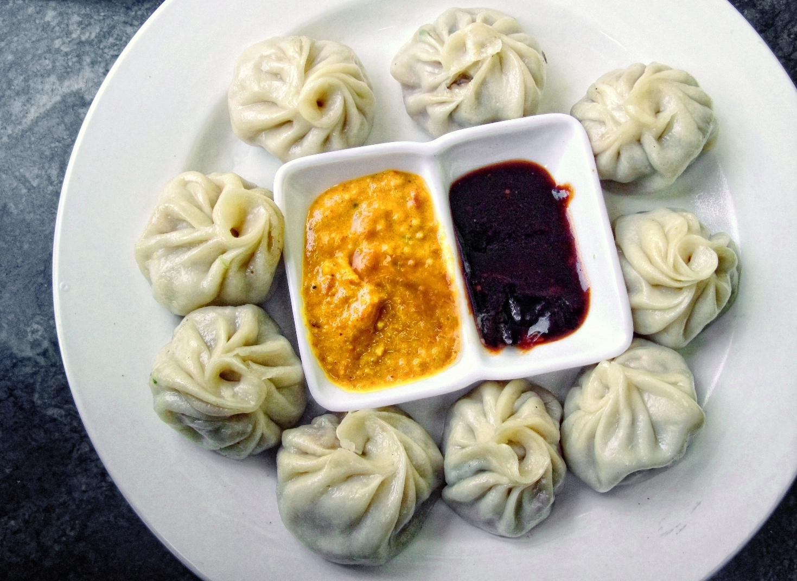

Nepali Chicken Momos
Juicy steamed dumplings filled with seasoned chicken and served with a bright tomato-chile achar.

About this dish
Momos are ubiquitous across Nepal, from street stalls to family kitchens and restaurants. Thin dough surrounds meat or vegetable fillings; steaming is especially common, though fried and pan-fried versions are also popular. A tomato-based achar is not an afterthought—it provides heat, acidity and a fresh counterpoint to the rich filling.
This version uses ground chicken and packaged wrappers for accessibility. For a fully homemade version, use the Basic Dumpling Wrappers Essential and serve with Nepali Tomato-Chile Chutney.
A dumpling shaped by Himalayan movement and exchange
Smithsonian Magazine notes that momo's exact origin cannot be pinned to a single documented moment, but the dish is widely connected to centuries of Nepal-Tibet trade and cultural exchange. Newar merchants who traveled between the Kathmandu Valley and Tibet are central to one prominent origin story, while other accounts point to Tibetan migration into Nepal.
What is clearer is momo's present-day place in Nepali life: it is everyday food, festival food and social food. Smithsonian's reporting emphasizes the group nature of momo-making—one person rolling, another filling, another pleating—and the way family recipes for fillings and achar become markers of memory and identity.
Momo fillings, shapes, spice levels and dipping sauces vary across Nepal and the wider Himalayan region. This chicken version represents one practical Nepali home style.
Preparation notes
Finely chopped vegetables add moisture, but pooled liquid makes wrappers difficult to seal. Drain excess water from cabbage if needed.
One tablespoon is plenty for a standard wrapper. Extra filling usually ends up in the seam and causes leaks.
The water should be strongly simmering before the steamer goes on. Weak steam gives gummy wrappers and longer cook times.
Ingredients & detailed method
Ingredients
- 24 dumpling wrappers
- 1 lb ground chicken
- 1 cup finely chopped cabbage
- 1/2 cup finely chopped onion
- 3 scallions, thinly sliced
- 1 tbsp grated fresh ginger
- 2 garlic cloves, minced
- 1 tbsp soy sauce
- 1 tsp ground cumin
- 1/2 tsp ground coriander
- Nepali Tomato-Chile Chutney, for serving
Method
- 1.Prepare the steamer. Line a steamer basket with perforated parchment, cabbage leaves or a very light coating of oil so the dumplings release cleanly.
- 2.Make the filling. Combine chicken, cabbage, onion, scallions, ginger, garlic, soy sauce, cumin and coriander.
- 3.Mix for texture. Stir the filling firmly in one direction for 1–2 minutes. Checkpoint: it should become slightly tacky and hold together on a spoon.
- 4.Test seasoning if desired. Cook a teaspoon of filling in a small skillet or microwave-safe dish and adjust salt or spice before filling all the wrappers.
- 5.Fill. Place about 1 tablespoon filling in the center of a wrapper. Keep the outer 1/2 inch clean.
- 6.Seal. Moisten the rim lightly and pleat or fold firmly around the filling. Checkpoint: the seam should stay closed when gently tugged and there should be no filling caught at the edge.
- 7.Keep covered. Place finished momos under a lightly damp towel while you shape the rest so the wrappers do not dry and crack.
- 8.Bring the water to temperature. Set the steamer over strongly simmering water; the water should not touch the basket.
- 9.Arrange with space. Set momos at least 1/2 inch apart so steam can circulate and the wrappers do not fuse together.
- 10.Steam. Cover and steam 10–12 minutes without repeatedly lifting the lid.
- 11.Check doneness. Checkpoint: wrappers should look glossy and slightly translucent, and the filling in a test momo should reach 165°F with no pink chicken remaining.
- 12.Rest and serve. Let the momos stand 2 minutes so the wrappers firm slightly, then serve immediately with tomato-chile chutney.